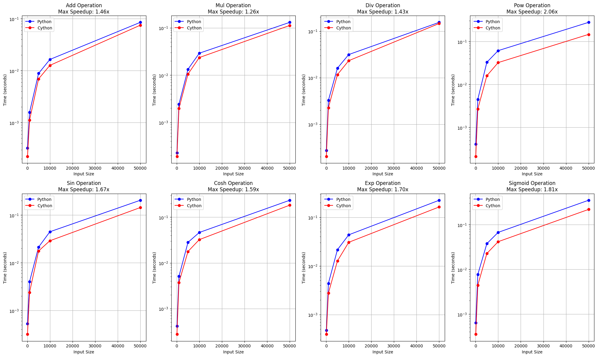

Cython Analysis¶
The dual_autodiff package has a Cythonized version called dual_autodiff_x. Let’s analyse the performances for both of the packages.
[1]:
#import the required packages
import numpy as np
import time
import matplotlib.pyplot as plt
from typing import List, Tuple
from dual_autodiff import dual
from dual_autodiff_x import dual as dual_x
from dual_autodiff.tools import add_function
from dual_autodiff_x.tools import add_function as add_function_x
First, let’s verify that the Cython and Python versions give us the same results.
[22]:
#Define the function and the partial derivatives with the same example in the demo
def fmv (x, y):
return y**2 * np.sinh(3 * x + 2) + 2 * y + x
def fmv_x(x, y):
return 3 * y**2 * np.cosh(3 * x + 2) + 1
def fmv_y (x, y):
return 2 * y * np.sinh(3 * x + 2) + 2
[23]:
#define dual numbers x and y using both packages
py_x_dual = dual.Dual(1, {'x': 1, 'y': 0})
cy_x_dual = dual_x.Dual(1, {'x': 1, 'y': 0})
py_y_dual = dual.Dual(2, {'x': 0, 'y': 1})
cy_y_dual = dual_x.Dual(2, {'x': 0, 'y': 1})
print(f"Python partial derivative wrt x: f_x(x = 1, y = 2) = {fmv(py_x_dual, py_y_dual).dual['x']}")
print(f"Cython partial derivative wrt x: f_x(x = 1, y = 2) = {fmv(cy_x_dual, cy_y_dual).dual['x']}")
print(f"Python partial derivative wrt y: f_y(x = 1, y = 2) = {fmv(py_x_dual, py_y_dual).dual['y']}")
print(f"Cython partial derivative wrt y: f_y(x = 1, y = 2) = {fmv(cy_x_dual, cy_y_dual).dual['y']}")
Python partial derivative wrt x: f_x(x = 1, y = 2) = 891.5193822974542
Cython partial derivative wrt x: f_x(x = 1, y = 2) = 891.5193822974542
Python partial derivative wrt y: f_y(x = 1, y = 2) = 298.812842311155
Cython partial derivative wrt y: f_y(x = 1, y = 2) = 298.812842311155
They give the exact same results.
Test the speeds of the pure Python and Cython version of the package for different operations.
[17]:
#Define the sigmoid function - this will be used as the custom function
def sigmoid(x):
"""Sigmoid function implementation"""
return 1 / (np.exp(-x)+1)
def sigmoid_derivative(x):
"""Derivative of sigmoid function"""
s = sigmoid(x)
return s * (1 - s)
def benchmark_operation(operation: str, sizes: List[int],
py_dual, cy_dual, num_trials: int = 5) -> Tuple[List[float], List[float]]:
"""
Benchmark a specific operation for both Python and Cython implementations.
Includes testing of
- addition
- multiplication
- division
- powers
- sin
- cosh
- exp
- sigmoid (custom function)
"""
py_times = []
cy_times = []
for size in sizes:
py_total = 0
cy_total = 0
for _ in range(num_trials):
x_vals = np.random.rand(size)
# Python version timing
py_start = time.time()
for i in range(size): #for different numbers of operations
x = py_dual(x_vals[i], {'x': 1.0})
if operation in ['add', 'mul', 'div', 'pow']:
y = py_dual(x_vals[i], {'y': 1.0}) #if involving another dual number - binary operation
if operation == 'add':
result = x + y
elif operation == 'mul':
result = x * y
elif operation == 'div':
result = x / y
elif operation == 'pow':
result = x ** y
#if does not involve another dual number - unary operation
elif operation == 'sin':
result = np.sin(x)
elif operation == 'cosh':
result = np.cosh(x)
elif operation == 'exp':
result = np.exp(x)
elif operation == 'sigmoid':
result = sigmoid(x)
py_total += time.time() - py_start
# Cython version timing
cy_start = time.time()
for i in range(size):
x = cy_dual(x_vals[i], {'x': 1.0})
if operation in ['add', 'mul', 'div', 'pow']:
y = cy_dual(x_vals[i], {'y': 1.0})
if operation == 'add':
result = x + y
elif operation == 'mul':
result = x * y
elif operation == 'div':
result = x / y
elif operation == 'pow':
result = x ** y
elif operation == 'sin':
result = np.sin(x)
elif operation == 'cosh':
result = np.cosh(x)
elif operation == 'exp':
result = np.exp(x)
elif operation == 'sigmoid':
result = sigmoid(x)
cy_total += time.time() - cy_start
#save the times
py_times.append(py_total / num_trials)
cy_times.append(cy_total / num_trials)
return py_times, cy_times
def run_benchmarks(py_dual, cy_dual):
"""Run the benchmarks and plot"""
# Add the sigmoid function to both implementations
add_function('sigmoid', sigmoid, sigmoid_derivative)
add_function_x('sigmoid', sigmoid, sigmoid_derivative)
operations = ['add', 'mul', 'div', 'pow', 'sin', 'cosh','exp', 'sigmoid']
sizes = [100, 1000, 5000, 10000, 50000]
plt.figure(figsize=(20, 12))
for idx, op in enumerate(operations, 1):
plt.subplot(2, 4, idx)
py_times, cy_times = benchmark_operation(op, sizes, py_dual, cy_dual)
# Calculate speedup
speedups = [py/cy for py, cy in zip(py_times, cy_times)]
# Plot timing comparison
plt.plot(sizes, py_times, 'o-', label='Python', color='blue')
plt.plot(sizes, cy_times, 'o-', label='Cython', color='red')
plt.title(f'{op.capitalize()} Operation\nMax Speedup: {max(speedups):.2f}x')
plt.xlabel('Input Size')
plt.ylabel('Time (seconds)')
plt.grid(True)
plt.legend()
# Log scale
plt.yscale('log')
plt.tight_layout()
return plt
#Analyse how much memory it takes to store a dual number for python and cython version
def analyse_memory_usage(py_dual, cy_dual):
"""Analyse memory usage"""
import sys
#Create random number
x_val = np.random.rand()
#create dual numbers
py_dual = py_dual(x_val, {'x': 1.0})
cy_dual = cy_dual(x_val, {'x': 1.0})
return sys.getsizeof(py_dual), sys.getsizeof(cy_dual)
[19]:
# Run benchmarks
plt = run_benchmarks(dual.Dual, dual_x.Dual)
plt.savefig('dual_benchmarks.png')
# Check memory usage
py_size, cy_size = analyse_memory_usage(dual.Dual, dual_x.Dual)
print(f"Memory usage per object: Python={py_size} bytes, Cython={cy_size} bytes")
Memory usage per object: Python=48 bytes, Cython=56 bytes

We can see that the Cython package is fast than the Python package for all of these operations.
It takes more memory, however, to store a dual number using the Cython package as opposed to the Python package.
Now, let’s analyse the speeds for partial differentiation with the same example as in the demo notebook.
[20]:
def benchmark_partial_derivatives(sizes, num_trials=5):
"""
Benchmark partial derivative computation for both implementations
Args:
sizes: List of input sizes to test
num_trials: Number of trials for each size
"""
py_times = []
cy_times = []
def fmv(x, y):
return y**2 * np.sinh(3 * x + 2) + 2 * y + x
for size in sizes:
py_total = 0
cy_total = 0
# Generate random points for testing
x_vals = np.random.rand(size)
y_vals = np.random.rand(size)
for _ in range(num_trials):
# Python version timing
py_start = time.time()
for i in range(size):
x_dual = dual.Dual(x_vals[i], {'x': 1, 'y': 0})
y_dual = dual.Dual(y_vals[i], {'x': 0, 'y': 1})
result = fmv(x_dual, y_dual)
dx = result.dual['x']
dy = result.dual['y']
py_total += time.time() - py_start
# Cython version timing
cy_start = time.time()
for i in range(size):
x_dual = dual_x.Dual(x_vals[i], {'x': 1, 'y': 0})
y_dual = dual_x.Dual(y_vals[i], {'x': 0, 'y': 1})
result = fmv(x_dual, y_dual)
dx = result.dual['x']
dy = result.dual['y']
cy_total += time.time() - cy_start
py_times.append(py_total / num_trials)
cy_times.append(cy_total / num_trials)
return py_times, cy_times
def run_partial_derivative_benchmark():
"""Create performance comparison plot"""
sizes = [100, 500, 1000, 5000, 10000, 50000]
py_times, cy_times = benchmark_partial_derivatives(sizes)
# Calculate speedup
speedups = [py/cy for py, cy in zip(py_times, cy_times)]
# Create the plot
plt.figure(figsize=(12, 6))
# Plot timing comparison
plt.plot(sizes, py_times, 'o-', label='Python', color='blue', linewidth=2)
plt.plot(sizes, cy_times, 'o-', label='Cython', color='red', linewidth=2)
# Add labels and title
plt.title(f'Partial Derivatives Performance Comparison\nMax Speedup: {max(speedups):.2f}x',
fontsize=14, pad=20)
plt.xlabel('Number of Evaluations', fontsize=12)
plt.ylabel('Time (seconds)', fontsize=12)
# Add grid and legend
plt.grid(True, linestyle='--', alpha=0.7)
plt.legend(fontsize=12)
# Use log scale for both axes
plt.xscale('log')
plt.yscale('log')
plt.tight_layout()
return plt
[21]:
# Create and save the performance comparison plot
plt = run_partial_derivative_benchmark()
plt.savefig('partial_derivatives_benchmark.png', dpi=300, bbox_inches='tight')
The Cython version can be almost doubly as fast as the Python version.